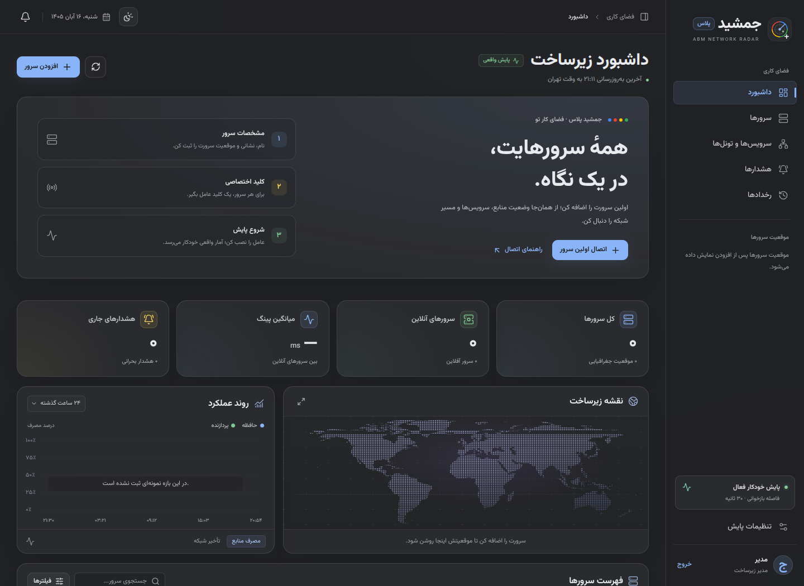

سرورهای خودت
فهرست سرورها از صفر شروع میشود. هر میزبان با نشانی، کشور و کلید اختصاصی خودش به پنل وصل میشود.
از اولین سرورت تا مسیرهای بین چند کشور؛ منابع، سرویسها و تونلها را در جمشید پلاس دنبال کن.
فهرست سرورها از صفر شروع میشود. هر میزبان با نشانی، کشور و کلید اختصاصی خودش به پنل وصل میشود.
CPU، حافظه، پورتها و وضعیت سرویسها را از عامل لینوکسی بگیر. نمونههای دریافتنشده خالی میمانند.
پینگ، DNS، TCP، UDP و ردیابی مسیر را از عامل منتخب اجرا کن و نتیجه را کنار رخدادهای سرور ببین.
شیشه، زغالی و استخوانی؛ با رنگهای گوگل، فونت محلی وزیرمتن و دنبالکردن پوستهٔ سیستم.
تصویر اولین ورود به پنل؛ سرورها و نمودارها با اتصال عاملهای خودت تکمیل میشوند.

Ubuntu 24.04 یا لینوکس دارای systemd و Python 3.10 به بالا. فایلهای رابط و فونت همراه پروژهاند.
پروژه را از GitHub دانلود و استخراج کن. از داخل پوشهٔ پروژه، روی VPS مرکزی اجرا کن:
sudo bash install.shحساب مدیر را هنگام نصب میسازی. پورت پیشفرض 127.0.0.1:8788 است.
دریافت سورس از GitHub ↗در ترمینال کامپیوتر خودت، با حساب SSH و نشانی واقعی VPS مرکزی اجرا کن:
ssh -NT -L 127.0.0.1:8788:127.0.0.1:8788 USER@PANEL_IPسپس http://127.0.0.1:8788 را باز کن. پورت ۴۴۳ برای سرویس فعلیات آزاد میماند.
در پنل، نام و IP یا دامنهٔ سرور خودت را ثبت کن. کشور، گروه، پورتها و سرویسهای مورد نیازت را انتخاب کن.
در صفحهٔ سرور، «دریافت کلید نصب عامل» را بزن و کلید همان سرور را کپی کن.
پروژه را روی میزبان مورد نظر دانلود کن و فرمان زیر را از پوشهٔ آن اجرا کن. نشانی قابل دسترس پنل و کلید را در نصبکننده وارد کن.
sudo bash install-agent.shبرای سرور دوم از HTTPS پنل یا یک تونل SSH از همان سرور به پنل مرکزی استفاده کن. تا اولین گزارش، وضعیت میزبان «در انتظار عامل» است. شرح اتصال چند سرور و HTTPS در README و راهنمای عملیات آمده است.
README فارسی، راهنمای اتصال، آزمونهای یکپارچه، CI و فایلهای آمادهٔ GitHub Pages همراه پروژهاند.